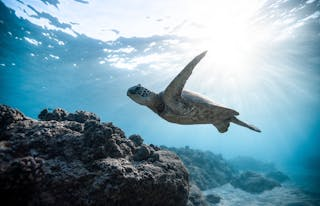

Reptilien
Ihre Haut ist mit Schuppen bedeckt und sie können ihre Körpertemperatur nicht selbst regulieren. Das kann ich auch nicht! Ich brauche immer eine warme Decke oder eine heiße Schokolade. Wusstest du, dass sie durch ihre Lungen atmen, genau wie wir, die Menschen?
Beispiele für Reptilien: Schildkröten, Schlangen, Alligatoren und Leguane.
